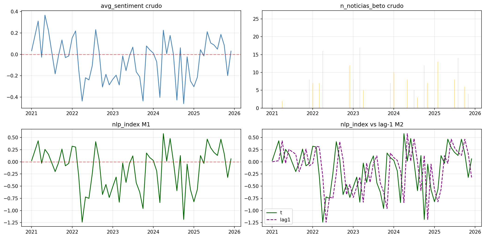
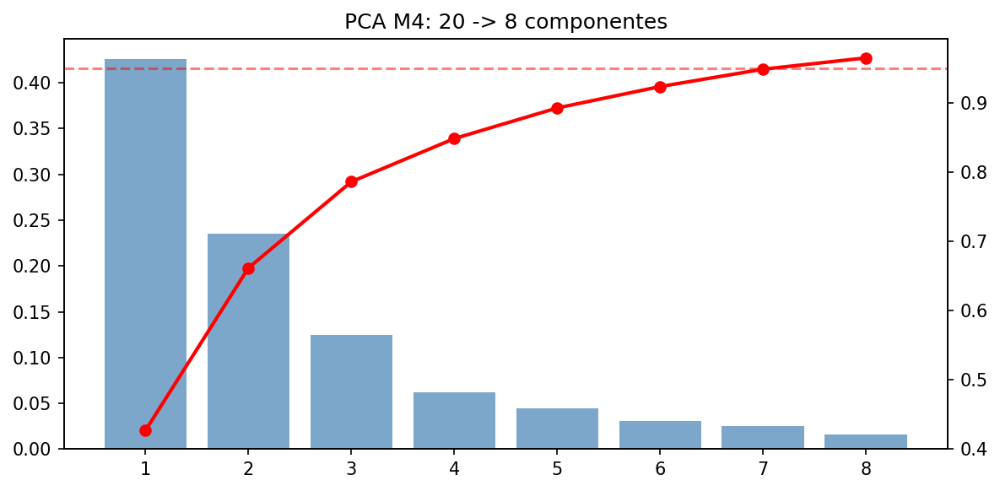

BETO (Spanish BERT fine-tuned) analizó noticias de Agraria.pe para extraer sentimiento mensual sobre el mercado agroindustrial peruano. El resultado fue integrado como feature del Canal B del modelo GE mediante cuatro módulos de ingeniería (M1–M4).

Diagrama completo del pipeline de ingeniería de features NLP (M1–M4)
Meses con pocas noticias tienen señal NLP débil aunque el sentimiento sea extremo. El logaritmo pondera el sentimiento por el volumen informativo — reduce el ruido de meses con 1–2 artículos.
El impacto de una noticia sobre precios de chacra no es inmediato: el mercado tarda 1 mes en ajustarse. El lag-1 captura este efecto retardado, mejorando la correlación con la variable objetivo.
Las features NLP tienen baja correlación causal con la producción provincial (noticias nacionales vs target local). Un dropout mayor que el resto de la red previene que el modelo memorice señales espurias del Canal B.
El espacio original de embeddings BETO tiene alta multicolinealidad. PCA elimina redundancia antes de la fusión LSTM, reduciendo el riesgo de sobreajuste con n=44 observaciones.

Varianza explicada acumulada del Canal B (M4 · PCA 95%) — 23 features → 8 componentes
GM original (NLP básico) tuvo MAE = 0.0981 — peor que el GE sin NLP (0.0673). Las mejoras M1–M4 revirtieron esta regresión: GM v2 logra MAE = 0.0646.
| Métrica | GM original · NLP básico | GM v2 · NLP mejorado (M1–M4) |
|---|---|---|
| MAE | 0.0981 ↑ peor que GE | 0.0646 ✓ mejor que GE |
| RMSE | 0.1007 | 0.0771 |
| R² | −5.96 | −9.86 (alta varianza shocks) |
| Deterioro en shocks | N/D | +29.2% — vulnerable |
| MASE | 6.11 | 4.02 |
Las noticias de Agraria.pe cubren tendencias nacionales del mercado limón. El modelo predice producción de una provincia específica (Piura, Sullana). Un artículo sobre «caída del limón en Lambayeque» introduce ruido geográfico que distorsiona la predicción para el norte chico.
Las mejoras M1–M4 reducen este ruido mediante ponderación por volumen (M1), captura del efecto retardado (M2), regularización específica (M3) y reducción de dimensionalidad (M4) — pero sin eliminar la causa raíz.
Scraping regional de fuentes locales (Piura/Sullana) con keywords específicos de limón sutil — «limón Sullana», «Fenómeno Niño Piura», «precio chacra norte». Estimación: reducción adicional de MAE de 15–25% en Canal B.